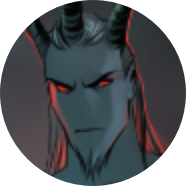
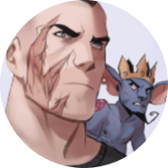
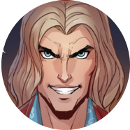
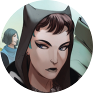
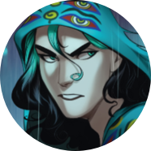

Сатана
Падший ангел, правитель Ада. Был предан ангелом Семиазой во время войны с Небесами, создал Трон для управления Адом. Ныне свергнут; после свержения долгое время был заперт в теле Данилы. Предположительно отец Антихриста. На настоящий момент пребывает в бестелесной форме.

Данила Бесобой
Охотник на демонов и Часовой, искусственно созданный Семиазой на кургане тысячи павших воинов и получивший их силу. Долгое время был убежден, что он бывший военный, потерявший семью во время боевых действий. В его теле был заперт Сатана. Спутник Данилы — бесенок Шмыг.

Антихрист (Часовой)
Часовой, отказавшийся умирать. Был заключен в Паутине Лимба и вырвался наружу благодаря хитрой интриге, не последнюю роль в которой против воли сыграл Данила. Оказавшись на Земле, Антихрист спешно принялся за новые интриги и в конце концов захватил Ад. Обаятелен, хитер, сам себе на уме.

Ярх Смертоносный
Бывший раб, освобожденный Сатаной, ныне — глава легиона Бретёров, третьего по значимости в Аду. Бывший личный телохранитель Сатаны, помог Аваддону и Ракшору свергнуть его с трона. Ближайшая подруга и бывшая напарница по Арене — демоница Танахия.

Яна
Девушка-Курьер, в тело которой демоны способны вселяться по собственному желанию. Сирота, жила на улице, промышляя мелким воровством. Данила спас Яну и привел в дом Черного Пса, где в нее переселился ночной кошмар Балор. Он обучает ее магии и постепенно разрушает ее личность.

Балор
Морок, бывший слуга Сиерго, созданный им из останков короля фоморов. Способен проникать в сны, превращая их в невыносимые кошмары. Балора трудно заметить, еще сложнее уничтожить. На настоящий момент находится в теле Яны, обучает и меняет ее, но от такого соседства меняется и сам.

Чёрный Пёс
(Алексей Рыков)
(Алексей Рыков)
Шаман, волей Совета Равновесия помогающий Даниле охотиться на нечисть; он набил Даниле татуировки и приютил Данилу, Яну, Шмыга и Павла у себя дома. Оборотень, знаком со многими нейтральными представителями нечистой силы.

Королева Гнили (Настя)
Ведьма, питающаяся жизненной энергией демонов, придерживается разумного нейтралитета, но по старой романтической дружбе с Черным Псом соглашается помочь Даниле в борьбе против оборотней в арке «Стая».

Павел Очередько
Бывший солдат, лишился ног при взрыве. Глава Магческого Чрезвычайного Комитета Дзержинский вернул ему ноги и предложил стать агентом МЧК. Получил задание помогать команде Бесобоя. Симпатичный и забавный молодой человек, с интересом поглядывает на Яну.